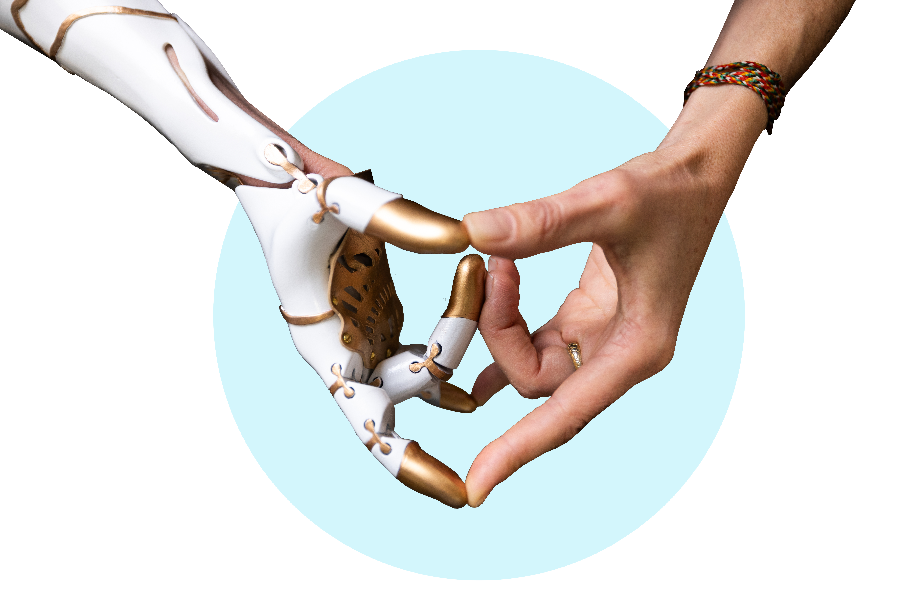
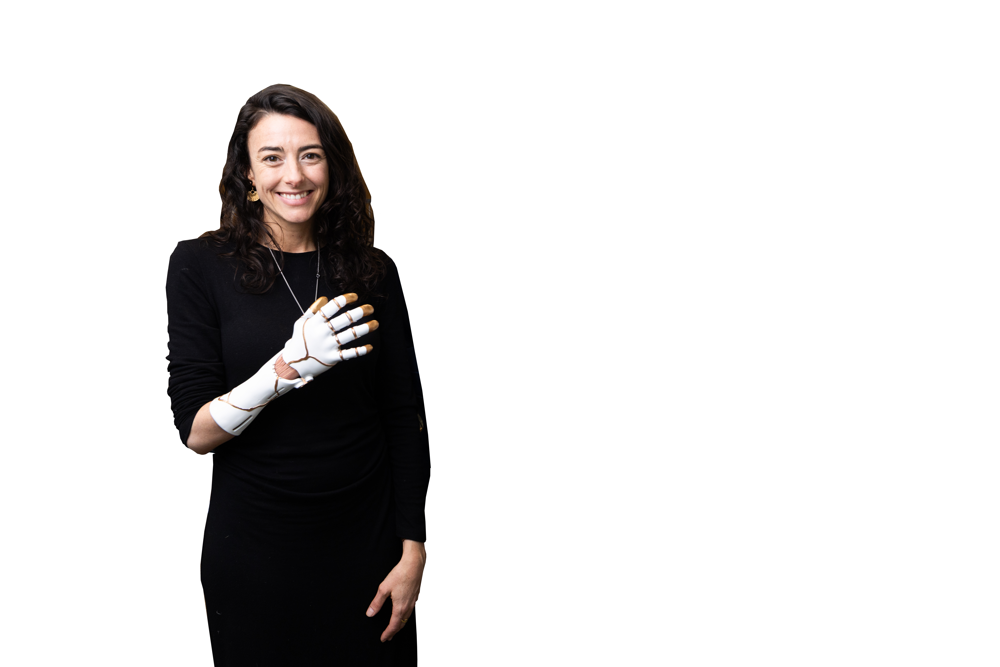
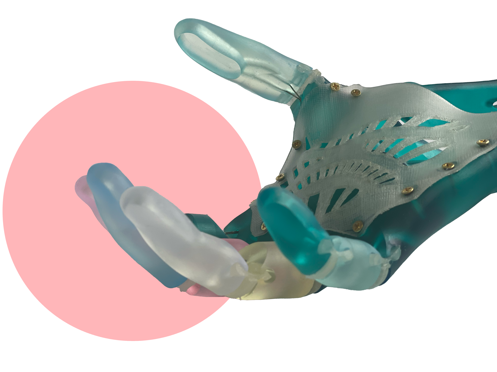
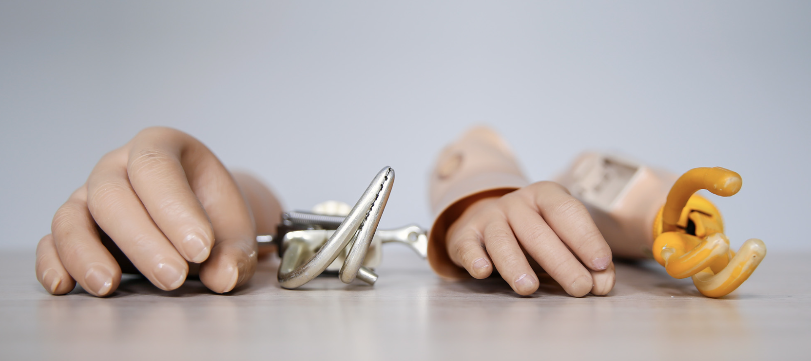

Customized prosthetics, reframed as tools of empowerment.
We design prosthetic hands that feel less like something to hide and more like something to author. Every finish becomes a statement about dignity, identity, and possibility.


Meet Jimena
Born without a fully developed hand, Jimena spent years adapting to prosthetics that often fell short-not only in appearance, but in comfort, fit, and everyday usability. Many devices felt clinical, generic, and disconnected from the people who wore them. As a designer and prosthetic user herself, she began asking a different question: What if a prosthetic could be both functional and deeply personal? Drawing from her own experiences, Jimena set out to create prosthetics that prioritize comfort, individuality, and self-expression. Her work reframes prosthetics from something to hide into something people can proudly wear as a reflection of who they are.
Full StoryGive us a hand
Help us bring TrueForm from concept to a functional, wearable prototype. Funds raised will support the next phase of development, including material research, prosthetic component sourcing, digital modeling, fabrication, fit testing, comfort studies, and iterative prototype refinement.
Support

Join Us
We are looking to collaborate with people who share Jimena's condition or have similar upper-limb differences and want to help shape the future of personalized prosthetics. We are also open to partnerships with prosthetic specialists, clinicians, researchers, universities, and healthcare organizations.
Contact UsThe Trueforma Vision
Trueforma treats prosthetics as personal design objects as much as functional tools. Each hand is shaped to support comfort, expression, confidence, and everyday use in the real world.
